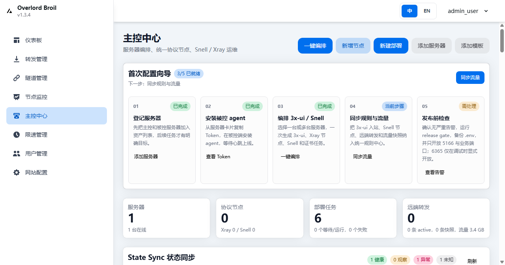

安装主控
安装脚本会创建 /opt/overlord-broil/.env, 下载 compose 和 overlord.sql, 然后拉取或构建 overlord-master 单体镜像.
curl -fsSL https://raw.githubusercontent.com/zhizhishu/overlord-broil/main/scripts/install-master.sh | sudo bash0.6.0 release candidate
一个统一的多服务器主控产品: 在同一个工作台里选择多台服务器, 自动配置 Xray/Reality, Snell 和端口转发节点, 并统一查看证书, 流量, 服务状态和任务审计.

默认主控只公开一个入口: 5166/tcp. 浏览器和被控 Agent 都访问这个端口, MySQL, 后端调试别名和 phpMyAdmin 默认不暴露到宿主机公网.
安装脚本会创建 /opt/overlord-broil/.env, 下载 compose 和 overlord.sql, 然后拉取或构建 overlord-master 单体镜像.
curl -fsSL https://raw.githubusercontent.com/zhizhishu/overlord-broil/main/scripts/install-master.sh | sudo bash小规模烟测可跳过 MySQL sidecar. 迁移旧分离栈时, 脚本会停掉旧容器, SQLite 模式也会停掉旧 gost-mysql 容器, 但保留卷和旧文件.
curl -fsSL https://raw.githubusercontent.com/zhizhishu/overlord-broil/main/scripts/install-master.sh \
| sudo env OB_DB_MODE="sqlite" OB_FRONTEND_PORT="5166" bash先在主控创建服务器并点击加入命令. Agent 使用一条 join token 命令加入, 无需开放管理端口.
curl -fsSL https://raw.githubusercontent.com/zhizhishu/overlord-broil/main/scripts/install-agent-bootstrap.sh \
| sudo env OB_MASTER_URL="http://MASTER_IP:5166" OB_JOIN_TOKEN="paste-join-token-here" sh安装 / 升级会移除 vite-frontend, springboot-backend, gost-phpmyadmin 等旧分离栈容器, 避免 80/6365/8066 继续暴露.
sudo /opt/overlord-broil/install-master.sh upgradeOverlord Broil 不把 Snell 硬塞进 Xray 内核, 而是在主控层把它抽象成统一协议节点, 由 Agent 在被控服务器上部署独立服务.
统一管理 inbound, outbound, Reality, 路由规则, IPv4/IPv6 策略, 流量同步和 Xray restart.
统一显示在协议节点列表里, 底层由 systemd/OpenRC 管理 Snell 服务.
把远端端口转发记录到规则中心, 由 Agent 创建 socat 服务并回报状态.
汇总服务器心跳, 证书, 流量, 服务状态, 任务结果和操作审计.
默认设计目标很简单: 主控一个端口, 被控不开 Agent 入站端口, 业务节点按需开放.
核心链路已经进入 0.6.0 reliability gate. 下一步重点是真实 VPS 矩阵, 真实 Xray 端到端记录, 密钥轮换迁移和更完整的安全治理.